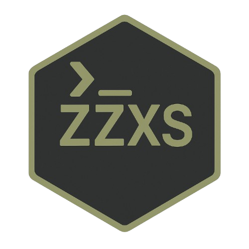

TERMUX ANDROID SUITE // MOBILE LINUX // CONTROLLED DEPLOYMENT
ZZX-TAS
ZZX-TAS (Termux Android Suite) is an Android/Termux-native collection of ZZX-Labs tools, wrappers, and deployment scripts for running Bitcoin, AI, media, and security utilities directly on mobile devices.
INTERNAL – Research, field testing, and controlled deployments only.
Packages0
Auto executeOFF
CredentialsNOT EMBEDDED
PlatformTERMUX
native/ install.sh